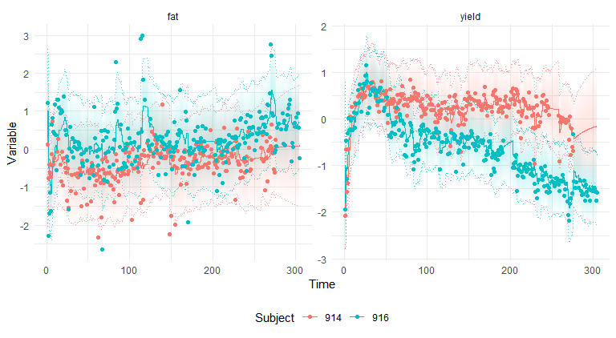
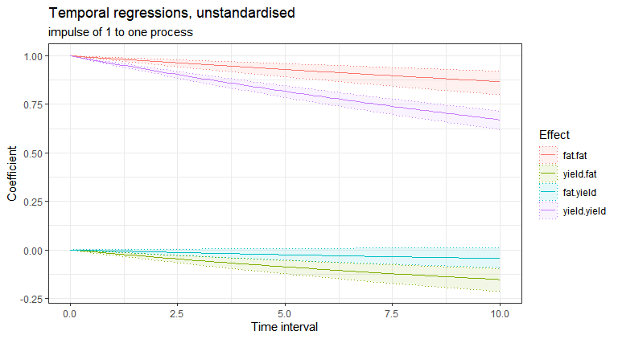
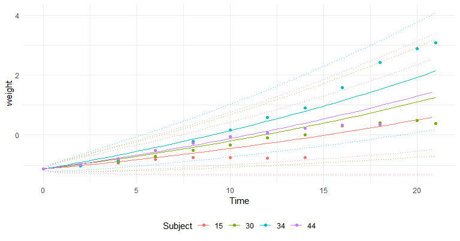

ctsem fits continuous and discrete time dynamic models to longitudinal data in R: panel data, intensive longitudinal data or a single time series. Observations can be at any times, and the times can differ between subjects.
Website · New in version 4 · Tutorial paper
Features
- Multiple interacting processes, including higher order (such as oscillating) and nonlinear dynamics.
- Effects of time-varying inputs, such as interventions.
- Multiple indicators, which can be continuous, binary, ordinal, counts or censored.
- Individual differences in any parameter, including at multiple nested levels (such as people within couples).
- Covariate effects on any parameter.
- Maximum likelihood, or Bayesian estimation by optimisation or sampling.
- Tools for testing a model’s fit and finding how to improve it.
- Latent growth curve, latent change score and cross-lagged panel models as special cases.
Version 4 adds an estimation engine written in Julia, now the default. It is two to three times faster than the Stan backend, uses multiple cores, and needs no compilation for new models. Random effects are integrated with a Laplace approximation, which estimates individual differences in the dynamics more accurately than earlier versions did.
Installation
remotes::install_github('cdriveraus/ctsem')
library(ctsem)
ctJuliaInstall() # once, to set up JuliaThe first fit after installing takes a few minutes longer while the engine compiles. Without Julia, ctFit(..., backend = 'stan') fits models as ctsem 3 did.
Compiler problems on Windows
Installing from GitHub compiles the package, which on Windows needs the Rtools version that matches your R. If compiling fails, check that rstan itself works, and try adding this line to ~/.R/Makevars.win:
The Stan forums cover other compiler problems.
Example
Milk yield and fat percentage of 53 cows, recorded on most days of a lactation, from the doBy package:
library(ctsem)
data(milkman_rdm1, package = 'doBy')
milk <- data.frame(
cow = milkman_rdm1$cowno,
day = milkman_rdm1$dfc, # days since calving
yield = as.numeric(scale(milkman_rdm1$my)),
fat = as.numeric(scale(milkman_rdm1$fatpct)))
model <- ctModel(
type = 'ct', # 'dt' for discrete time
LAMBDA = diag(2), # two processes, one indicator each
manifestNames = c('yield', 'fat'),
latentNames = c('yield', 'fat'),
time = 'day',
id = 'cow')
fit <- ctFit(milk, model)Anything not given to ctModel() takes a default. The effects between the two processes, for example, are estimated.
summary(fit)$popmeans
#> mean sd 2.5% 50% 97.5% mode
#> T0m_yield -0.949 0.142 -1.209 -0.950 -0.663 -0.943
#> T0m_fat 0.158 0.185 -0.212 0.155 0.506 0.151
#> drift_yield -0.041 0.004 -0.049 -0.041 -0.033 -0.041
#> drift_yield_fat -0.020 0.004 -0.027 -0.020 -0.013 -0.020
#> drift_fat_yield -0.006 0.004 -0.013 -0.006 0.002 -0.006
#> drift_fat -0.015 0.004 -0.024 -0.015 -0.009 -0.015
#> diff_yield 0.136 0.004 0.129 0.136 0.143 0.136
#> diff_fat_yield -0.591 0.062 -0.708 -0.592 -0.472 -0.592
#> diff_fat 0.116 0.005 0.106 0.116 0.125 0.116
#> mvaryield 0.329 0.003 0.323 0.329 0.335 0.328
#> mvarfat 0.582 0.005 0.573 0.582 0.591 0.582
#> mm_yield -0.053 0.123 -0.299 -0.052 0.187 -0.054
#> mm_fat 0.141 0.108 -0.063 0.140 0.352 0.142drift_yield and drift_fat are the auto effects: negative values mean each process tends back towards its equilibrium. drift_yield_fat is the effect of fat on yield, and drift_fat_yield the reverse. Higher fat is followed by lower yield, while yield has little or no effect on fat. The diff parameters describe the process noise, mvar the measurement error, mm the measurement intercepts and T0m the initial states.

Observations for two cows, with the model’s predictions and their uncertainty.
ctDiscretePars(fit, plot = TRUE)
The auto and cross effects as regression coefficients, as they change with the time interval.
Covariate effects
This example estimates the effect of diet on the growth of chicks (ChickWeight, in base R):
chickdata <- ChickWeight
chickdata <- cbind(chickdata, model.matrix(~ Diet - 1, chickdata)) # dummy code diet
colnames(chickdata)[5:8] <- paste0('Diet_', 1:4)
chickdata$weight <- scale(chickdata$weight)
m <- ctModel(
type = 'ct',
LAMBDA = diag(1),
manifestNames = 'weight',
latentNames = 'Lweight',
time = 'Time',
id = 'Chick',
DRIFT = 'a11, transform=param', # allow growth (no sign restriction)
MANIFESTMEANS = 0, # fix the measurement intercept...
CINT = 'cint, tipreds=c(Diet_2,Diet_3,Diet_4)', # ...and estimate the process intercept
TIpredNames = paste0('Diet_', 2:4), # diet 1 is the baseline
tipredDefault = FALSE) # no other covariate effects
f <- ctFit(chickdata, m, priors = TRUE)In ctModel(), a string is a free parameter and a number a fixed value. Options follow the parameter’s name, such as tipreds for covariate effects or indvarying for random effects; ctPar() writes these strings.
summary(f)$tipreds
#> mean sd 2.5% 50% 97.5% mode z
#> tip_Diet_2_cint 0.021 0.013 -0.005 0.021 0.046 0.021 1.570
#> tip_Diet_3_cint 0.050 0.013 0.025 0.050 0.074 0.051 3.983
#> tip_Diet_4_cint 0.028 0.013 0.001 0.028 0.052 0.028 2.135Diets 3 and 4 raise the intercept, and so the growth rate, compared with diet 1.
ctPredict(f, plot = TRUE, removeObs = TRUE, polygonalpha = 0,
subjects = as.numeric(chickdata$Chick[!duplicated(ChickWeight$Diet)]))
Predicted growth for one chick on each diet, from the diet alone.
Documentation
- The website has the help pages grouped by task, the vignettes and the manual.
- A tutorial paper works through an applied example, with code and materials.
- Vignettes: measurement models, multilevel random effects, uncertainty, score tests, IRT items, ordinal or continuous, sampling weights, empirical Bayes.
- Blog posts: quick start, dynamic systems, discrete time models, representations of dynamic systems, accelerated and multiple group designs, Kalman filter and smoother, heterogeneity, growth curves, binary data.
- Papers on hierarchical continuous time models and on modelling interventions.
- ctsemGUI is a point-and-click interface, and ctsemOMX the original OpenMx based ctsem.
Help
Ask questions in discussions and report bugs as issues. To cite ctsem, run citation('ctsem').
Older function names
Functions renamed in version 3.11 keep their old names as aliases, so older code still runs.
Renames in version 4 are listed in New in version 4.